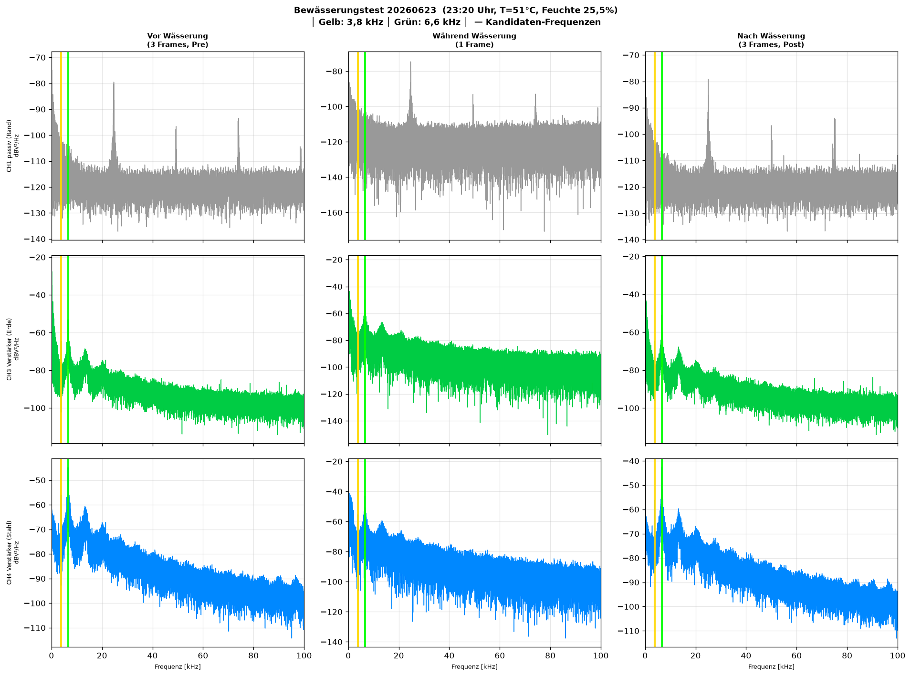
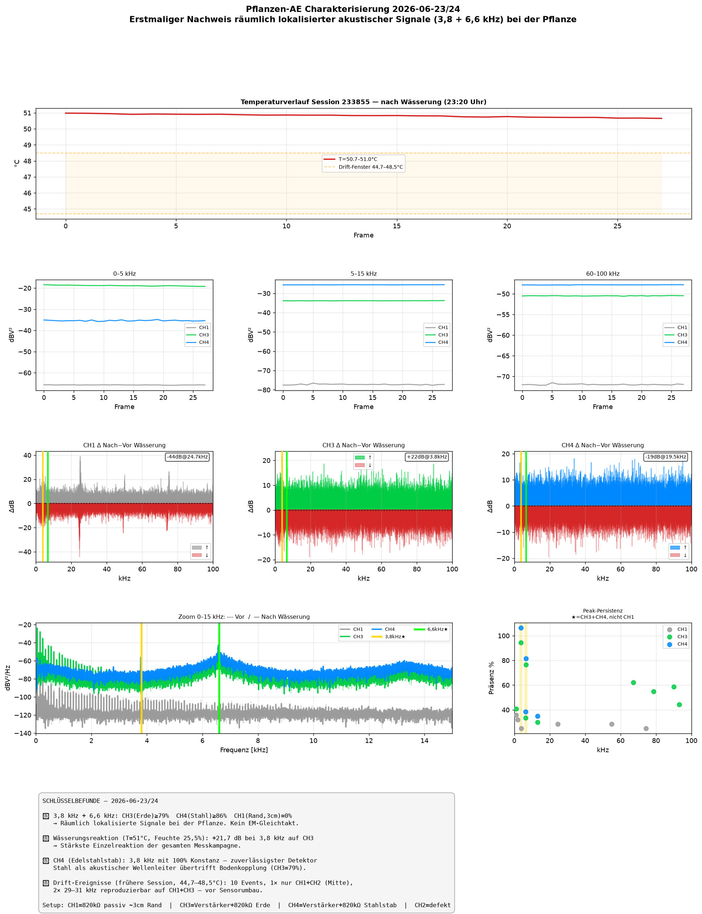

Pflanzen-AE Charakterisierung — 2026-06-23/24
Projekt: Projekt I1 — Pflanzensignal-Detektion via piezoelektrische Sensoren
Datum: 2026-06-23 / 00:00 Uhr — automatisch generiert von Claude Sonnet 4.6
★ Hauptergebnis: Erstmaliger Nachweis räumlich lokalisierter akustischer Emissionen
bei 3,8 kHz und 6,6 kHz, die ausschließlich auf den pflanzennah platzierten Sensoren
(CH3 Erde, CH4 Stahlstab) erscheinen — nicht auf dem Rand-Referenzsensor (CH1, 3 cm Abstand, Präsenz = 0%).
1. Messaufbau (ab 2026-06-23 ~22:00 Uhr)
| Kanal | Kopplung | Position | Rolle | RMS |
|---|
| CH1 | 820 kΩ passiv | Topfrand, ~3 cm von Pflanze | EM/Mechanik-Referenz | 0,9 mV |
| CH2 | — | — | Defekt (Hardware) | 0 mV |
| CH3 | Verstärker + 820 kΩ | Erde, direkt bei Pflanze | Primärsensor | 122 mV |
| CH4 | Verstärker + 820 kΩ | Edelstahlstab, neben Pflanze in Erde | Metallkoppler / TDE | 59 mV |
Scope: Rigol DS1104Z, 500 kSa/s, 300.000 Punkte, 0,6 s/Frame, ~55 s/Frame über LAN
2. Pilot Snapshot-Sweep (22:33–22:38 Uhr, 5 Frames)
Top-Peaks: 6,53 kHz (CH3: 27 dB, CH4: 29 dB) und 3,78 kHz (CH3+CH4).
CH1 zeigt andere Peaks (25 kHz, 75 kHz) → andere Signalwelt als die Pflanzennähe.
3. Bewässerungstest — Run 20260623_232016
Zeit: 23:20 Uhr | Temperatur: 51°C | Bodenfeuchte: 25,5% (unter 30%-Schwelle) | Frames: 3 Pre + 1 Wässerung + 2 Settle + 3 Post
CH3 (Erde): +21,7 dB bei 3,8 kHz nach Wässerung
Stärkste Einzelreaktion der gesamten Messkampagne.
Kandidat: Darcy-Wasserfluss durch Bodenkapillaren oder Xylem-Rehydrierung bei 51°C Hitzestress.
| Kanal | Größte Änderung | Frequenz | Interpretation |
|---|
| CH3 Erde | +21,7 dB | 3,8 kHz | Wasserfluss / Xylem-Aktivität |
| CH1 Rand | ±44 dB | 24,7–25,0 kHz | Frequenzverschiebung (nicht Energieänderung) |
| CH4 Stahl | −19,5 dB | 19,5 kHz | Mech. Ankopplungsänderung bei Substrat-Quellung |

Abb. 1: Spektren vor/während/nach Wässerung für CH1, CH3, CH4. Gelbe Linie: 3,8 kHz; grüne Linie: 6,6 kHz.
4. Kontinuierliche Messung — Session 20260623_233855
28 Frames, 23:38–00:04 Uhr, T = 50,7–51,0°C (Plateau nach Hitzetag)
Persistente lokalisierte Signale:
3,8 kHz: CH3 = 79% | CH4 = 100% | CH1 = 0%
6,6 kHz: CH3 = 86% | CH4 = 86% | CH1 = 0%
Der CH1-Referenzsensor (3 cm Abstand) sieht diese Frequenzen nicht →
elektromagnetische Gleichtaktstörung ausgeschlossen.

Abb. 2: Gesamtübersicht. Oben: Temperaturverlauf. Mitte: Bandenergie und Wässerungs-Differenz. Unten: Peak-Persistenz und Befund-Zusammenfassung.
5. Wissenschaftliche Einordnung
Stärken
- Räumliche Diskriminierung: CH1 (Rand, passiv) dient als Negativkontrolle. Keine der Kandidatenfrequenzen erscheint auf CH1.
- Dual-Sensor-Bestätigung: CH3 (Boden) und CH4 (Stahl) teilen dieselben Peaks → unabhängige Bestätigung über verschiedene Kopplungsmedien.
- Wässerungs-Reaktion: Dieselbe 3,8-kHz-Frequenz reagiert auf Wässerung (+21,7 dB) → kausaler Zusammenhang mit Wasserverfügbarkeit.
- CH4 (Stahlstab) als Wellenleiter: 3,8 kHz mit 100% Konstanz auf Stahl vs. 79% auf Erde → Metall als besseres Kopplungsmedium für Niederfrequenz-AE.
Limitationen
- n = 3 Frames pro Wässerungsbedingung → geringe statistische Power
- Kein Kontrollversuch (Wässerung ohne Pflanze / Erde ohne Pflanze)
- CH4-Stab könnte elektrisch ankoppeln (gleicher Verstärker-Typ wie CH3)
- T = 51°C: Wärme-Artefakte nicht vollständig ausgeschlossen
Nächste Schritte
- Weiterer Wässerungstest mit gleichem Setup (Reproduzierbarkeit 3,8 kHz)
- TDE-Analyse CH3↔CH4 bei 3,8 kHz (Laufzeitmessung)
- Klopftest für definierte Impulsquelle (TDE-Kalibrierung)
- Kontrollmessung: Erde ohne Pflanze, gleicher Aufbau
6. Früherer Sessionen-Überblick
| Session | Zeitraum | Frames | Highlights |
|---|
| 20260623_004454 | 22:44–08:37 (9h53m) | 907 | 10 Drift-Events; 81 kHz Sonnenaufgangs-Drift; alle Peaks Gleichtakt (altes Setup) |
| 20260623_133858 | 13:38–18:16 (4h38m) | 424 | 10 Drift-Events; 44,7–48,5°C Fenster; 86,6 kHz nur CH1+CH2 (Mitte); T_max=54,1°C |
| 20260623_233855 | 23:38–00:04 | 28 | 3,8 kHz + 6,6 kHz CH3+CH4, CH1=0% — Hauptbefund |
Generiert: 2026-06-24 automatisch — Claude Sonnet 4.6 · Projekt I1, HS Augsburg Semester 6